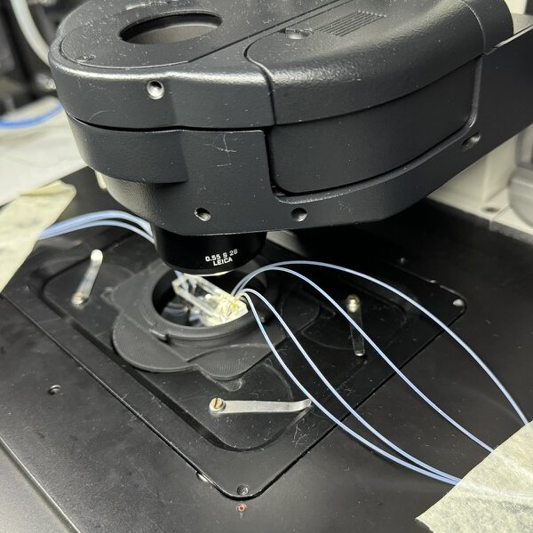

Leica DMi8 stage adaptor for circular glass slides
Not yet published
lab hardware
microscopy
microfluidics
Useful for microfluidic timelapses with 100X oil-immersion objectives.
Parts I have designed for 3D printing, from lab hardware to printer and household mods. Linked cards open the model page, where the files are free to download. All my published models are on Printables and MakerWorld. Cards marked as not yet published will be linked once the files are released.
